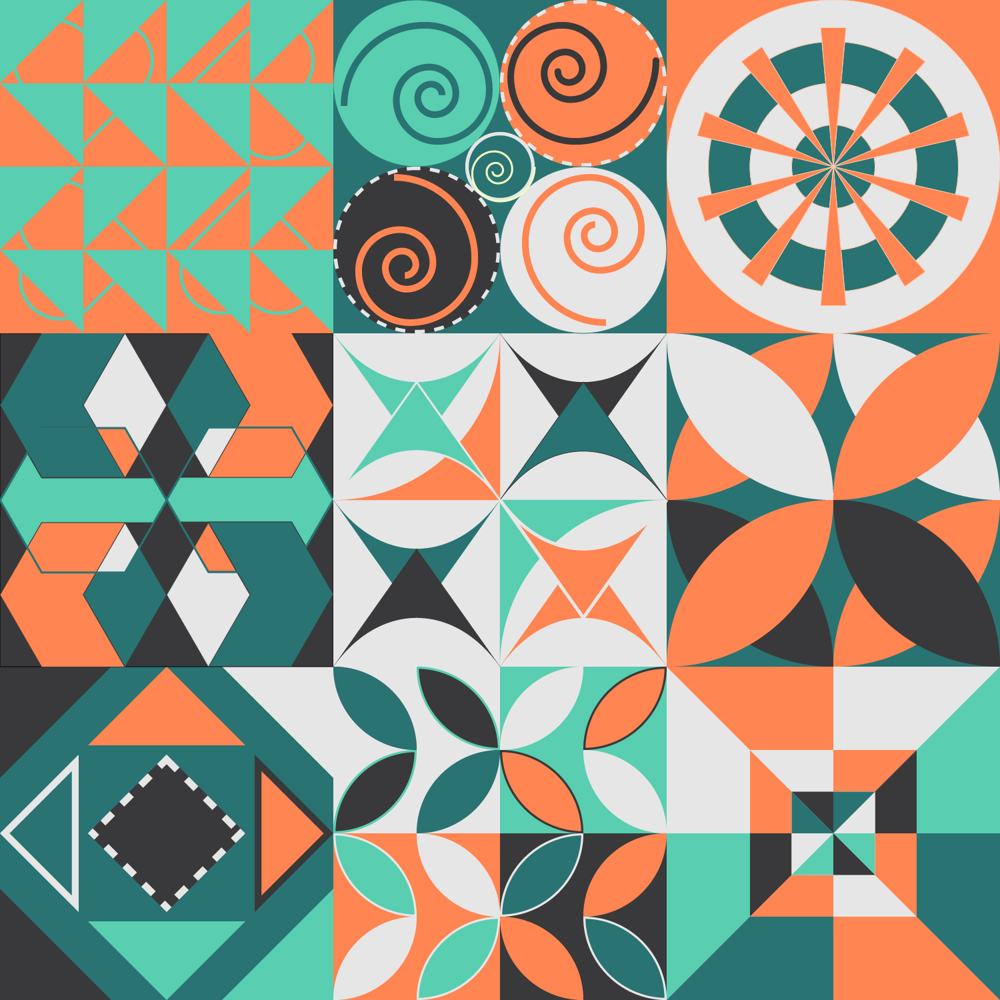
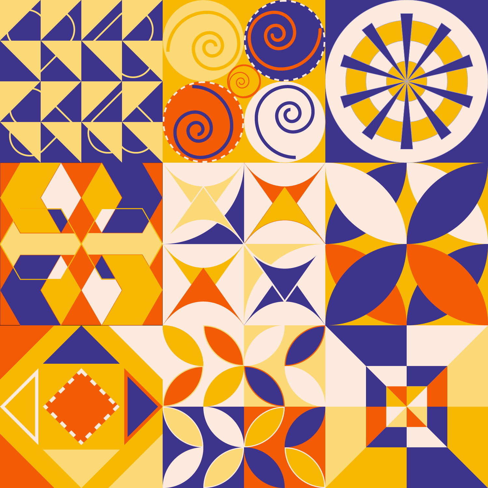
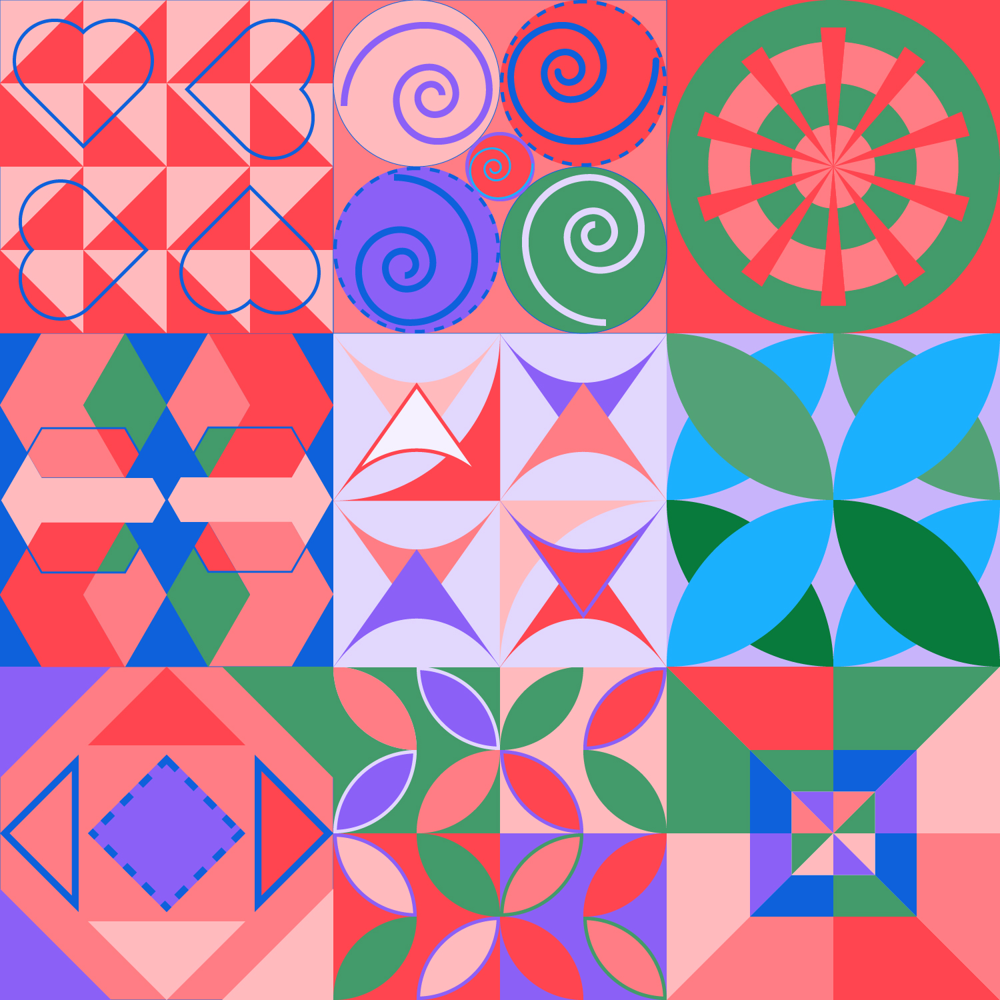
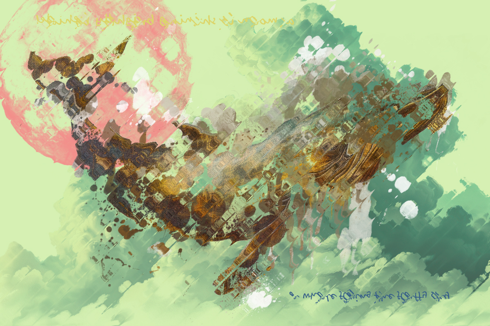
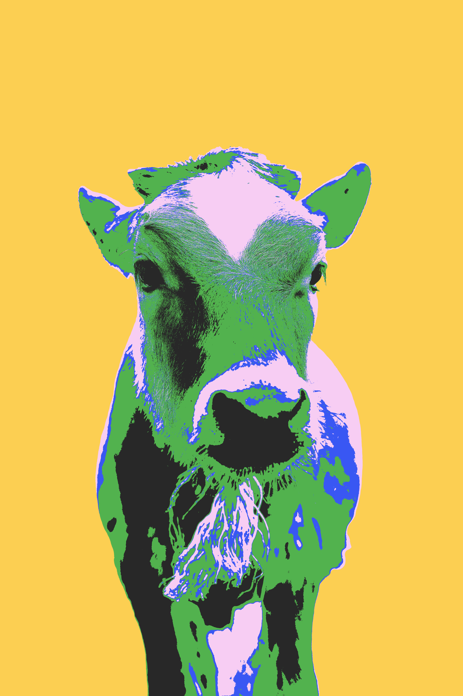
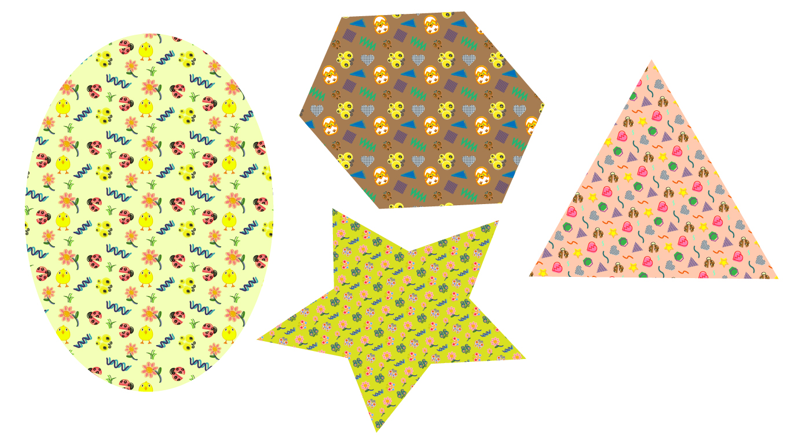

版畫與套印藝術 (Printmaking & Overprint)

OVER PRINT 疊印構圖作品
結合仙人掌、螳螂、向日葵和章魚，做成仙人掌有開花效果的視覺感官。運用紫、藍、綠、紅等對比色彩進行疊印，呈現出豐富的紋理層次與視覺張力。

BANANA TAIWAN 罐頭包裝展開圖
以台灣香蕉為主題的罐頭標籤設計，結合復古紙張紋理（Paper Texture）與高飽和度的版畫風印刷質感，呈現鮮明在地風情與現代設計感。

BANANA TAIWAN 3D 展示罐頭
將香蕉包裝圖樣應用於實體罐頭（3D Mockup）的視覺效果，襯托清爽的淺綠色背景，完美還原實體商品的情境與印刷效果。
AI 幾何圖形與配色探索 (Geometric Patterns)

AI 幾何圖形 - 薄荷綠鮮橘
九宮格構造的幾何紋樣設計，運用薄荷綠、活力橙與深灰色的組和，創造出富有節奏感的線條、螺旋與對稱幾何圖案。

AI 幾何圖形 - 寶藍黃
以強烈對比的寶藍色與暖黃色為主調，探索同款幾何九宮格架構在不同色彩組合下所產生的強烈視覺衝擊。
AI 幾何圖形 - 大地綠棕
採用沉穩的森林綠、暖棕色與奶油白搭配，賦予幾何圖樣溫和自然的大地氣息與優雅復古質感。

AI 幾何圖形 - 霓虹藍繽紛
融合鮮豔紅、寶藍、粉紅與翠綠的繽紛配色，並加入愛心與波浪元素，呈現活潑且富有現代流行感的幾何組合。
超現實與數位合成 (Surrealism & Digital Collage)

飛躍雲端的鯨魚 (Whale in Sky)
結合金屬質感鯨魚、粉紅巨月與綠色雲海的超現實數位合成作品。運用大量水彩與噴灑筆刷，營造夢幻且空靈的視覺意境。
鯨魚作品 - 直向玻璃紋理變體
透過垂直玻璃折射紋理濾鏡，將原本的超現實鯨魚構圖轉化為具備流動光影與壓花玻璃質感的抽象藝術效果。

鯨魚作品 - 斜向玻璃紋理變體
採用斜向玻璃折射紋理，讓畫面呈現動態扭曲與奇幻的光學透視感，深化畫面的詩意與層次。

向日葵與紅鬥魚 (Sunflower & Betta Fish)
將鮮紅的鬥魚與盛開的向日葵花海進行雙重曝光合成。

海洋與沉思者 (Naked Man with Sea)
運用古典雕塑般的人形輪廓與湛藍海岸風景進行雙重曝光。

古典雕像 - 莫蘭迪灰藍色調
對男性古典雕像進行低對比度與灰藍冷色調處理，營造出如博物館展廳般莊嚴、肅穆且具備歷史沉澱感的視覺氣氛。

普普風乳牛肖像 (Pop Art Cow)
受安迪·沃荷（Andy Warhol）啟發的普普藝術風格作品。將特寫乳牛照片運用高對比二值化與亮黃、紫紅、螢光綠進行撞色創作。

四隻牛牛普普風色階變化 (Pop Art Cow)
受安迪·沃荷（Andy Warhol）啟發的普普藝術風格作品。

修女與惡的美感
受安迪·沃荷（Andy Warhol）啟發的普普藝術風格作品。
向量圖樣與視覺設計 (Vector Patterns & Assets)

圖樣手繪元素與圖標庫
包含小雞、瓢蟲、花朵、水母、蝸牛及多種幾何點線面形狀的可愛手繪插畫元素，作為圖樣設計（Pattern Design）的基本單元。

幾何形狀圖樣應用色票
將創作的無縫重複圖樣（Pattern Fill）應用於橢圓、五角形、三角形及星形等幾何圖框中，展示圖樣在不同載體上的呈現視覺。